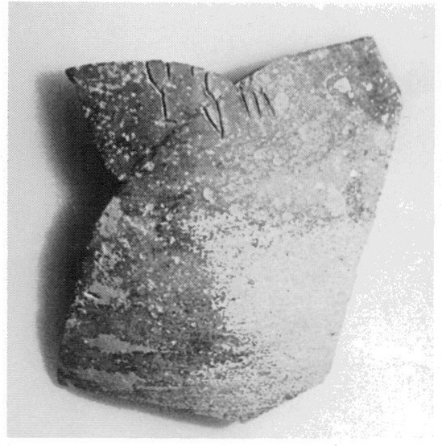
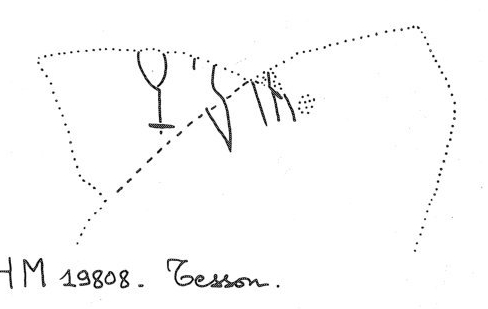

-
PHZb48
Names
PHZb48, PH Zb 48
Support
Clay vessel
Location
Phaistos
Findspot
Unavailable


Scribe
Unavailable
Context
Middle Minoan III
1750-1600 BCE
Dimensions
Catalogue
Hiraklion Museum
Readings
1 1 0 QA none
1 1 0 *305 none
1 1 1 *900 none
𐘌𐙙𐄁
QA*305*900
𐘌𐙙𐄁
QA*305*900
PH Zb 48
(HMp 19808)
(GORILA IV: 95), sherd (lower W court, MM I-III context)
QA
-*
305
-[•]
PLATANOS
Commentary © John Younger
References
papers/GORILA-Vol4.pdf#page=137